1
Produkcja
Własne zdania, mówione i pisane. Nie quiz i nie rozpoznawanie: budujesz i wypowiadasz.
Codziennie wypowiadasz i piszesz własne zdania, AI poprawia cię od razu i wyjaśnia każdy błąd, a system powtórek pilnuje, żeby nic nie wyparowało. 15 minut dziennie, sam, bez umawiania się z nikim.
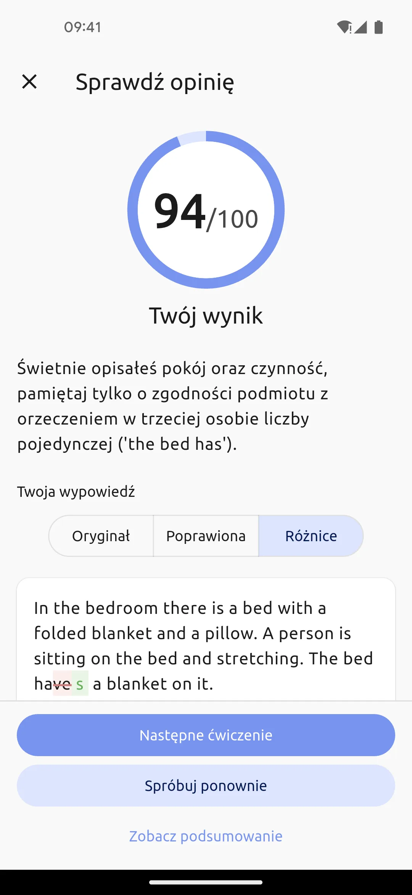
Znasz angielski pasywnie: widzisz zdanie i wiesz, co znaczy, słyszysz pytanie i łapiesz sens. Tego uczyła szkoła i tego uczyły aplikacje, w których klikasz właściwą odpowiedź.
Rozpoznajesz piosenkę po dwóch pierwszych akordach, a teraz zaśpiewaj ją dokładnie, z tekstem, w rytm. Coś nie wychodzi? Z mówieniem jest dokładnie tak samo.
Widzisz zdanie i wiesz, co znaczy. Wybierasz właściwą odpowiedź z czterech, dopasowujesz pary, uzupełniasz lukę. Mózg dostaje jedno pytanie: „rozpoznajesz?”.
Musisz zbudować własne zdanie i wypowiedzieć je na głos. Samodzielnie, pod presją czasu. Tu nie ma czterech opcji do wyboru, jest puste pole i twój głos.
Przez lata szkoła i aplikacje ćwiczyły z tobą rozpoznawanie. Mówienia nikt nie sprawdził, więc ta umiejętność po prostu nie została wytrenowana. Dlatego zamierasz, a to nie jest kwestia talentu.
Punkty, poziomy i ogień w aplikacji rosną, bo nic w nich nie kazało ci powiedzieć ani napisać własnego zdania. Na forach dla uczących się języków ten sam motyw wraca co tydzień.
Pół godziny w aplikacji dziennie przez pół roku, skończony kurs, a wciąż nie umiem mówić.
1500 dni serii z aplikacji, a rozmowa nadal nie wychodzi.
Wszyscy sprzedają „płynność w 3 miesiące”, a ludzie po latach nauki nie umieją wypowiedzieć zdania.
To nie są wyjątki, tylko standardowy wynik standardowej metody.
Mówienie to umiejętność, więc rośnie tak jak każda umiejętność: od ćwiczeń, które trenują ją wprost. Tak ćwiczy się fortepian i pływanie, więc język nie jest tu wyjątkiem.
Własne zdania, mówione i pisane. Nie quiz i nie rozpoznawanie: budujesz i wypowiadasz.
Dowiedz się, co powiedziałeś, co powinno paść i dlaczego. To nie samo „dobrze”, tylko wyjaśnienie przy błędzie.
System wraca z tym, co zaczęło się ulatniać, dokładnie wtedy, kiedy jest to potrzebne. Niczym nie zarządzasz sam.
Pulpit mówi wprost, co na ciebie czeka: kilka liczb u góry i krótka lista zaległości pod nimi. Robisz swoje w dowolnej kolejności, a wszystko, co zbierzesz, wpada do jednego systemu powtórek.
Wybierasz poziom od A1 do C2, gatunek i klimat, a historia powstaje w kilka sekund. Słuchasz lektora, w jednym tapnięciu pokazujesz tłumaczenie zdania, a w każde słowo tapniesz, żeby dodać je do słownictwa.
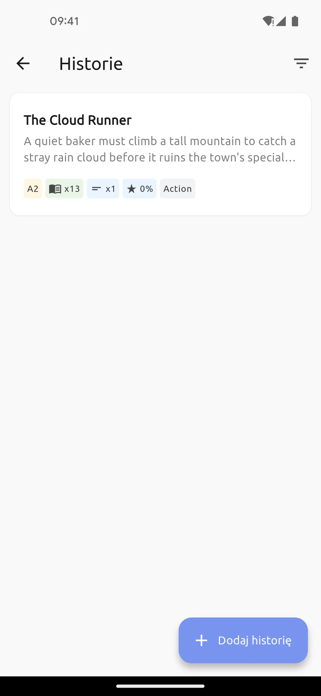
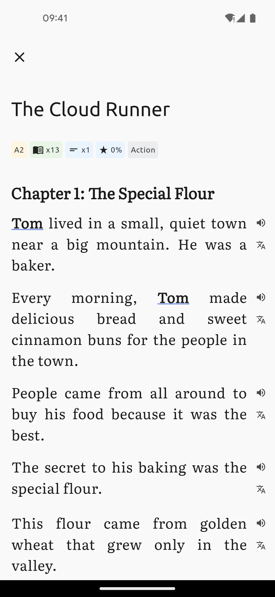
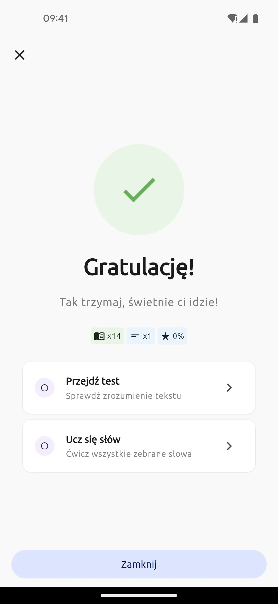
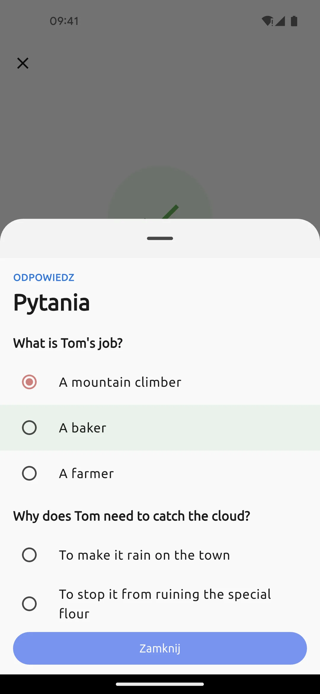
Opisujesz obraz, odpowiadasz na pytanie albo odgrywasz scenę z życia: zamówienie kawy, pytanie o drogę. Nagrywasz się, a dostajesz wynik, transkrypcję tego, co naprawdę powiedziałeś, wersję poprawioną obok i wyjaśnienie przy każdym błędzie.
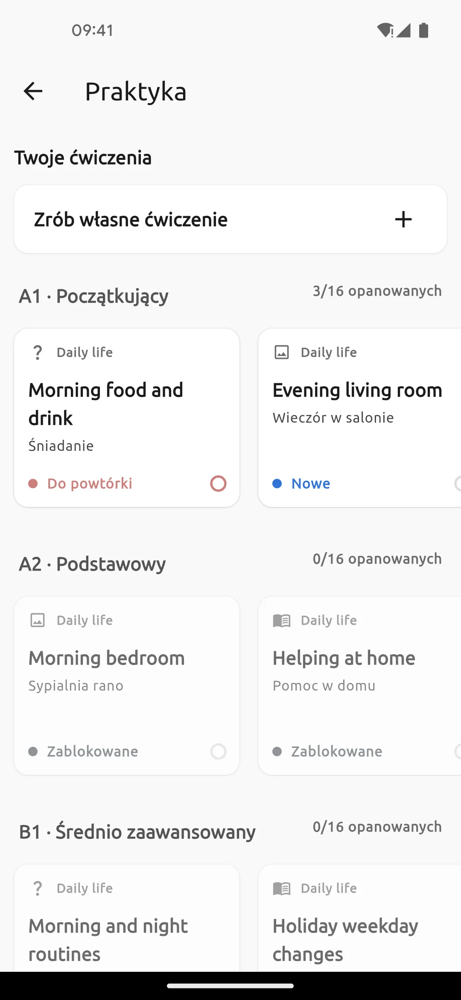
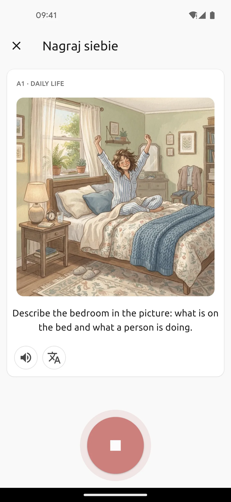
Słowo trafia do ciebie z historii albo z własnego wyszukiwania. Dostajesz definicję, tłumaczenia, przykłady i kolokacje, a potem piszesz własne zdanie z tym słowem. AI sprawdza gramatykę i kontekst, pokazuje twoje zdanie obok poprawionego i tłumaczy, co było nie tak.
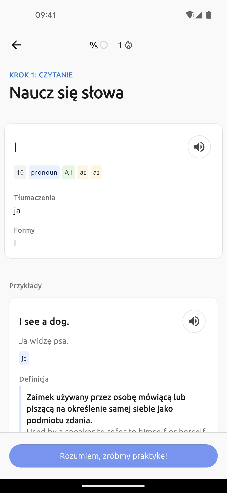
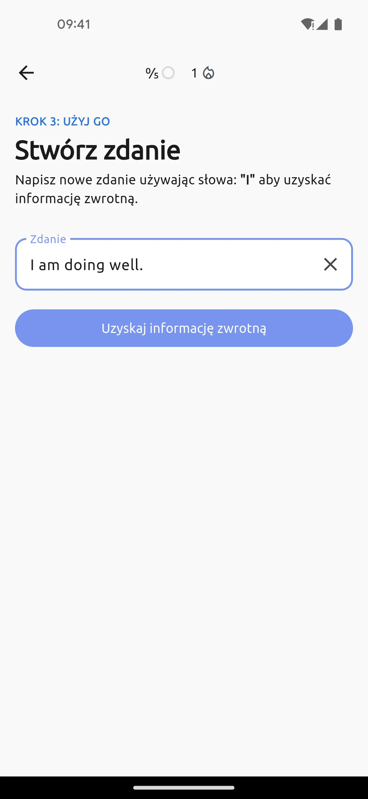
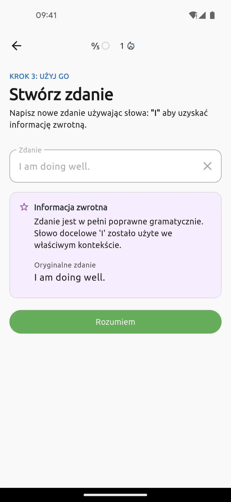
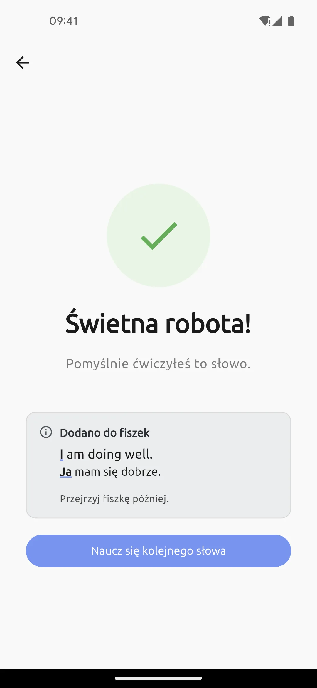
Karta pokazuje jedną stronę i zasłania drugą. Oceniasz, jak poszło, a system sam przesuwa kolejne powtórki. Słówka z historii, poprawki z mówienia i własne zdania trafiają do jednej talii, więc niczego nie zarządzasz osobno.
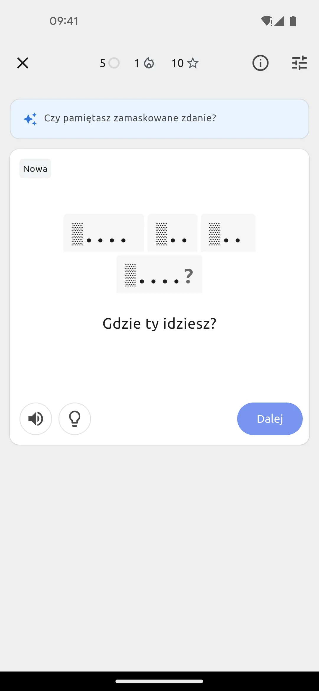
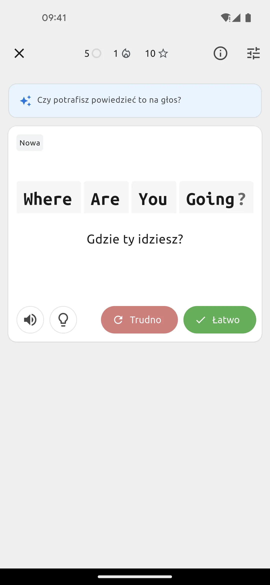
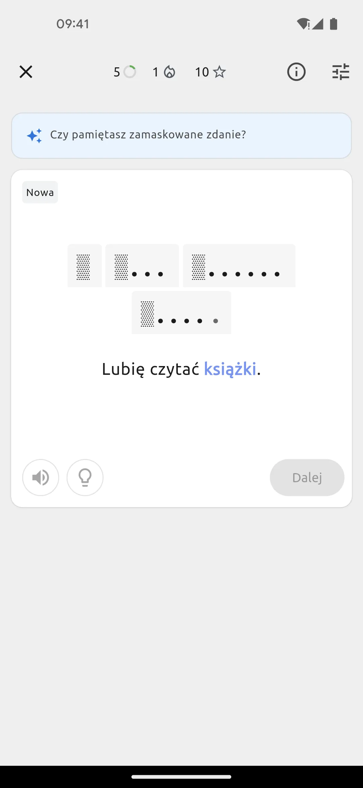
Dlatego to, co zrobisz w jednej aktywności, wzmacnia wszystkie pozostałe.
O mówieniu nie decyduje to, ile wiesz, tylko co dzieje się na treningu. Cztery kryteria i pięć zwyczajnych dróg. Każda ma prawdziwe mocne strony i co najmniej jedną prawdziwą pułapkę.
| Droga | Produkcja | Konkretna poprawka | Codziennie | Bez publiczności |
|---|---|---|---|---|
| Aplikacja do drillów | nie | tylko dobrze albo źle | tak | tak |
| Podcasty i książki | nie | nie | tak | tak |
| Lektor i konwersacje | tak | tak | rzadko | nie |
| Monologi do siebie | tak | nie | tak | tak |
| Praktyka z AI, czyli Soliloquy | tak | tak | tak | tak |
Kryteria wzięte z tego, co naprawdę decyduje o mówieniu: produkcja, konkretna poprawka, codzienność i brak publiczności.
Prawdziwa rozmowa daje chaos, przerwy i spontan, czego AI nie odda i nie udajemy, że jest inaczej. Problem leży w czymś innym: plan „umówię się kiedyś z lektorem” prawie nigdy nie zmienia się w regularną praktykę. Soliloquy zalepia tę dziurę, która w większości planów świeci pustkami, czyli produkcję z poprawką, codziennie.
Nic nie konfigurujesz i niczego nie odkładasz na potem. Konkretnie tak to wygląda.
Język, poziom od „dopiero zaczynam” do „zaawansowany”, motywacja, tematy, które cię interesują, i głos lektora.
Otwierasz aplikację i widzisz krótką listę: historia, mówienie, słówka, powtórki. Przy każdej pozycji liczba zaległych rzeczy. Wybierasz kolejność, a nic nie jest zamknięte.
Powiesz zdanie i dostaniesz transkrypcję oraz wersję poprawioną. Od tego momentu masz dziennik błędów, który opowiada historię twojego mówienia.
Sam sobie zadawałeś te pytania, więc nie będę ich pomijał. Także te, które nie są dla nas wygodne.
Poprawia konkretnie. Twoja wypowiedź zamienia się w transkrypcję, obok dostajesz wersję poprawioną i wyjaśnienie przy każdym błędzie: dlaczego ten czas, dlaczego taki przyimek, dlaczego tak brzmi naturalniej. Wszystkie błędy lądują w dzienniku i po drodze stają się fiszkami.
Sprawdź to sam: w wersji próbnej powiedz celowo „I have 30 years” zamiast „I am 30” i zobacz, czy to złapie.
Nie, i to nie jest cel. Celem jest zrozumiałość: być rozumianym łatwo i bez wysiłku dla słuchacza. Akcent jest częścią ciebie, nie usterką, a zaawansowani obcokrajowcy mówią z akcentem i funkcjonują w tym języku normalnie.
Sygnał o wymowie dostajesz tam, gdzie coś realnie przeszkadza w zrozumieniu. Obietnicy pozbycia się akcentu nie dostaniesz, obietnicy bycia lepiej zrozumianym, owszem.
W niektórych rzeczach jest i nie będę tego odwracał. Prawdziwa rozmowa daje chaos, przerwy, żart i spontan.
AI jest lepsze w trzech innych: jest o 22:30, kiedy ci się przypomniało; nigdy się nie męczy twoimi błędami i nie wzdycha zniecierpliwione; nie musisz mieć odwagi ani dobrej miny. To nie jest opcja albo albo. Lektor do spontanu, praktyka z AI do fundamentu, codziennie.
Przerwy są częścią metody, nie przewinieniem. Nic nie przepada: postęp, słowa i błędy zostają, a system po powrocie mówi, co przejrzeć najpierw.
Ten plan jest do wracania, nie do perfekcji. Kto buduje nawyk na poczuciu winy, ten buduje na piasku.
Szczerze: tygodnie i miesiące codziennej praktyki, nie „płynność w 3 miesiące”. Żadnego poziomu CEFR z datą nie dostaniesz, bo takich obietnic tu nie składamy.
Co zmienia się pierwsze: otwierasz usta bez zamierania, zdania wracają szybciej, własne błędy zaczynasz widzieć sam. Co zmienia się najpóźniej: wymowa i poczucie płynności.
Twoje konto, twoje błędy, twoje słowa, twoje notatki. Synchronizacja z chmurą działa automatycznie: nowy telefon, logowanie i wszystko wraca. Postęp nie znika razem z aplikacją, a twoich danych nie sprzedajemy reklamodawcom.
Wersja próbna daje pełną pętlę, a premium zdejmuje limity. Wypróbuj przez dziesięć wieczorów po kwadransie i sprawdź trzy mechanizmy: produkcję, poprawki, powtórki.
Czy każdego dnia powiedziałem coś po angielsku na głos?
Czy poprawki łapały moje prawdziwe błędy, czy tylko ogólniki?
Czy pamiętam słowa i zdania z pierwszego dnia, bez zaglądania?
Dwa „tak” na trzy to znak, że mechanizm u ciebie działa. Jeśli zero albo jedno, to nie kupuj, tylko napisz nam, co się nie spina. To dla nas cenniejsze niż zachwyt. W najgorszym razie zostaje ci dziesięć dni praktyki mówienia i dziennik własnych błędów, a te rzeczy zostają nawet wtedy, gdy powiesz „nie”.
@soliloquy.pl na Instagramie
A zanim cokolwiek pobierzesz: powiedz dziś wieczorem trzy zdania o swoim dniu po angielsku. Nikt nie słucha, więc błąd nic nie kosztuje.